地政学
ベレンはアマゾン河口で大西洋と内陸河川を結ぶ玄関口です。港、州都機能、軍事と環境政策が近く、森林保全、鉱物、先住民領域、国際会議の議論が街の物流と観光に影響します。河口の距離感が政治と暮らしを動かします。
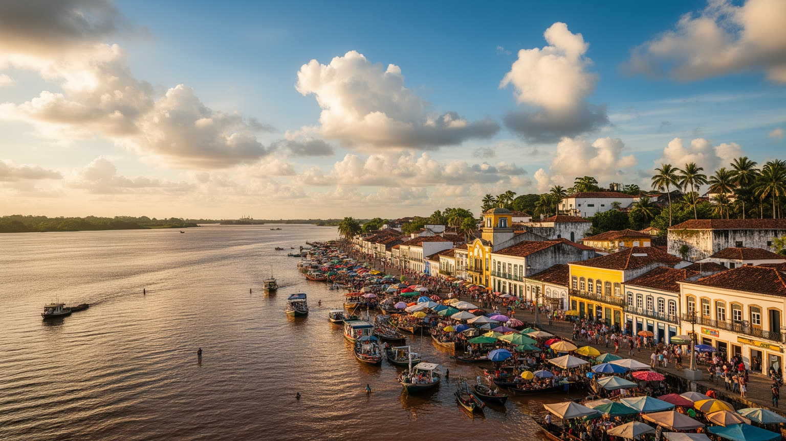
🇧🇷 ブラジル / 南米 / World City Atlas
アマゾン河口の港、植民地都市、巨大市場、カトリック巡礼、熱帯雨林文化が重なる都市です。川と雨に近い生活の中で、食品、観光、物流、信仰、住宅問題が同じ街路に現れます。
都市の骨格
ベレンは大西洋に近いアマゾン河口の都市です。市場、港、教会、旧市街、低地住宅地、島々への船が重なり、森の産物と都市生活が毎日行き来します。
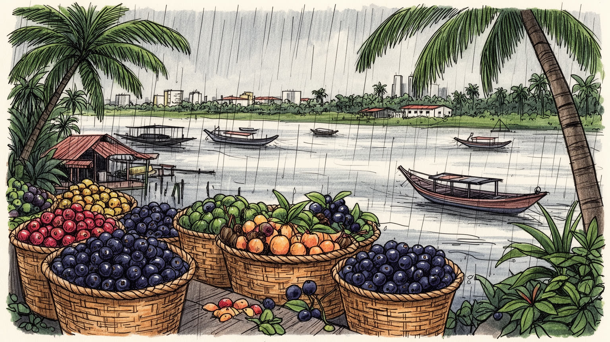
ベレンはアマゾン河口で大西洋と内陸河川を結ぶ玄関口です。港、州都機能、軍事と環境政策が近く、森林保全、鉱物、先住民領域、国際会議の議論が街の物流と観光に影響します。河口の距離感が政治と暮らしを動かします。
港湾、卸売市場、行政、食品加工、観光、大学、医療が雇用を支えます。アサイーや魚、木材、鉱物関連の流れも街に集まり、屋台、船員、荷役、清掃、介護、警備の労働が都市の朝を動かしています。雨の日も動きます。
ベレンの文化はポルトガル植民地の建築、アマゾン先住民とアフロ系の食、音楽、カトリック巡礼が混ざります。チリオ・デ・ナザレは信仰と家族の季節を作り、市場の香りも祈りと日常を結び直します。今も強い暦です。
旧市街、市場、河岸、島々は旅の魅力ですが、住民には暑さ、豪雨、浸水、交通、治安、住宅不足、所得格差が日々の条件です。観光の成功は、川辺の暮らしと公共空間を守れるかで決まる都市の大きな共有焦点です。
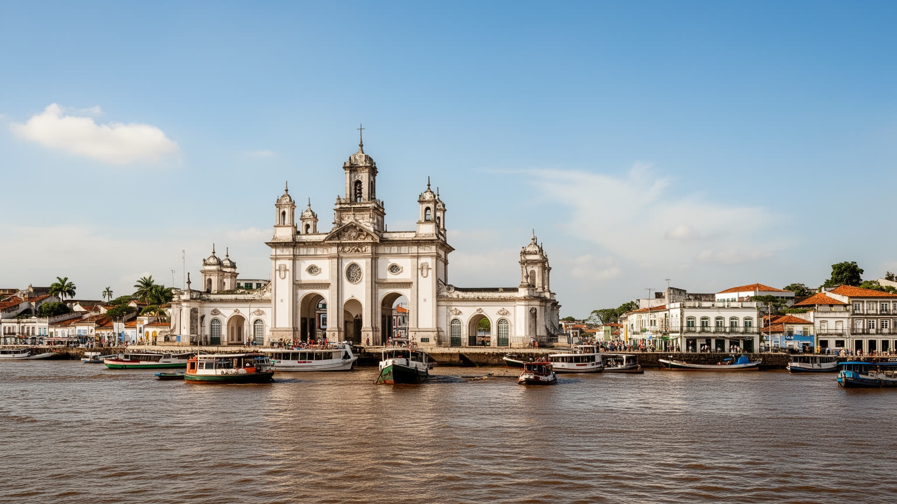
ベレンはアマゾン川そのものの本流から少し離れながら、グアジャラ湾と河口域を通じて大西洋と内陸の水路を結びます。地図では沿岸都市に見えますが、実際には森の奥から届く食材、木材、鉱物、乗客、行政課題が集まる河川都市です。港と市場は、海へ開く物流と内陸へ向かう生活航路を同時に扱います。マラジョ島や周辺の島々への船は、観光だけでなく通学、通院、親族訪問、商品の仕入れを担います。道路網が届きにくい地域では、水上交通が社会の基本線になります。ベレンを見ると、アマゾンは遠い自然ではなく、価格、食卓、仕事、選挙、環境規制として都市に入り込んでいることが分かります。河口の位置は、森林保全や気候外交を語る会議都市としての役割も強めます。国際的な環境会議や森林政策の議論が注目されるほど、ベレンはアマゾンを説明する舞台になりますが、その舞台の足元には港で働く人、低地に住む家族、島から通う学生がいます。地政学を読むとは、地図上の要衝だけでなく、川を使って暮らす人の時間を読むことでもあります。首都ブラジリアや南東部の大都市から遠いことも、ベレンの政治感覚を形作ります。国の周縁に置かれながら、気候と森林の議論では世界の中心に立つ。その二重性が、河口都市としての緊張を生んでいます。だから港と会議場は同じ都市の顔です。
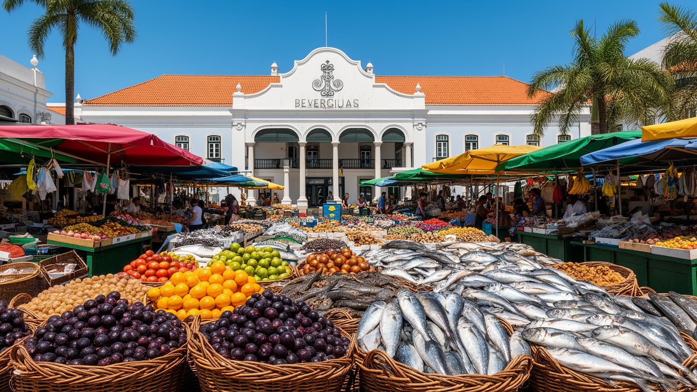
ベレンの食文化は、ヴェル・オ・ペーゾ市場を中心に読むと分かりやすくなります。魚、エビ、アサイー、キャッサバ、トゥクピー、ジャンブー、香草、薬草、果物が朝早くから並び、川と森の産物が都市の日常食へ変わります。観光客には色鮮やかな市場ですが、住民にとっては仕入れ、朝食、会話、値段交渉、仕事探しの場です。タカカ、マニソバ、パト・ノ・トゥクピーのような料理には、先住民の知識、植民地時代の食材移動、アフロ系の調理、都市の屋台文化が重なります。食は地域の誇りである一方、衛生、物流、物価、漁業資源の変化にも左右されます。市場を歩くことは、アマゾンの多様性を消費するだけでなく、都市の労働と自然の限界を同時に見ることです。アサイーの価格が上がれば朝食も屋台の利益も変わり、漁獲が不安定になれば家庭料理の献立も変わります。ベレンの市場は観光名所である前に、自然資源、流通、家計、地域の記憶が毎朝交渉される公共空間です。食の豊かさは、そこに働く人が都市に残れるかによって保たれます。高級レストランが郷土料理を洗練させる一方、屋台や家庭料理は手の届く価格で地域の味を残します。食の評価では、皿の美しさだけでなく、材料を運ぶ船、朝の仕込み、台所で受け継がれる知識も見る必要があります。食卓は都市の地図そのものと言えます。毎朝動きます。
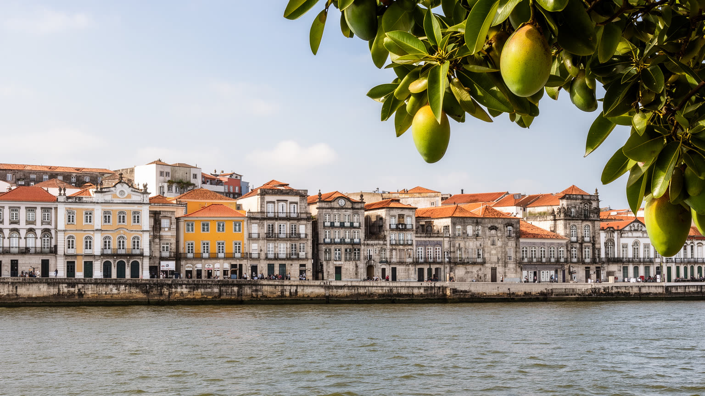
旧市街のベレンには、ポルトガル植民地の砦、教会、広場、タイルの建物、港湾倉庫の記憶が残ります。河岸は防衛と交易の場所であり、同時に都市の顔でした。植民地建築は美しい景観として保存されますが、その背後には先住民社会への支配、奴隷労働、宣教、資源の持ち出しもあります。近年の河岸再生は、観光、飲食、文化施設を生み、都市の魅力を高めました。一方で、整備された水辺のすぐ外には老朽住宅、露店、交通混雑、治安不安が残ります。歴史地区を読むには、写真に映る外壁だけでなく、誰がその場所を使い続け、誰が改修費や家賃上昇で押し出されるのかを見る必要があります。ベレンの河岸は、記憶を展示する場所であると同時に、今も生活がぶつかる場所です。保存された教会や劇場は都市の誇りになりますが、保存が観光のためだけに進むと、日常の商売や低所得層の住まいは周辺へ押されます。植民地都市を美しく見せることと、植民地支配の痛みや現在の格差を語ることは両立しなければなりません。河岸の再生は、見せる歴史と暮らす歴史の均衡を試しています。夕方の散歩道、飲食店、文化施設が増えるほど、公共空間の管理も重要になります。誰もが川へ近づける水辺を保てるかが、歴史都市の開放性を測る目安です。保存は観光の技術である前に、記憶を共有する制度です。今も問われます。
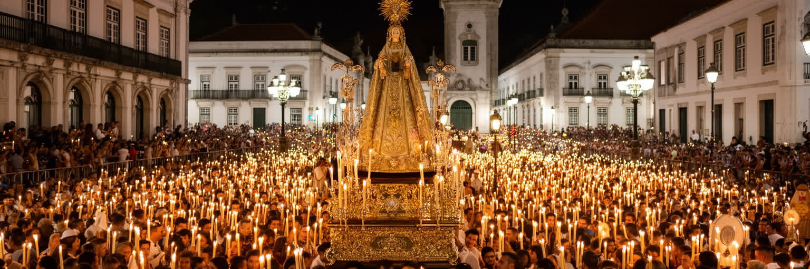
ベレンを代表する宗教行事チリオ・デ・ナザレは、カトリックの巡礼であると同時に、家族、食、移動、商売、公共サービスを巻き込む都市の季節です。聖母像をめぐる行列には膨大な人が集まり、祈り、約束、感謝、身体的な苦行が街路に現れます。ロープを引く行為は信仰の象徴であり、都市の道路は一時的に日常の交通から宗教の通路へ変わります。祭りの日には親族が集まり、伝統料理を作り、遠方から来た人を迎えます。信仰は観光資源にもなりますが、警備、清掃、医療、宿泊、露店管理、交通規制の大きな負担も生みます。ベレンの宗教生活は、教会の建物だけでなく、家庭の台所、市場の買い物、約束を果たす身体、群衆を支える労働に広がっています。チリオは都市を一時的に再編し、普段は別々に暮らす階層や地区を同じ行列へ引き寄せます。ただし、群衆の熱気の中にも、商売の機会、宿泊費の上昇、救護体制、公共交通の混乱があります。信仰の強さを理解するには、奇跡の物語だけでなく、祭りを成立させる都市運営も見る必要があります。行列の後に残る食事、掃除、帰宅の混雑も宗教都市の一部です。祈りは個人の心に閉じず、都市の道路、家族の予定、商人の収入、行政の準備を動かします。街角の音楽やサッカー帰りの人波も、祭りの夜をにぎやかにします。チリオは、ベレンが自分自身を確認する大きな公共儀礼です。家族の記憶もそこで更新されます。
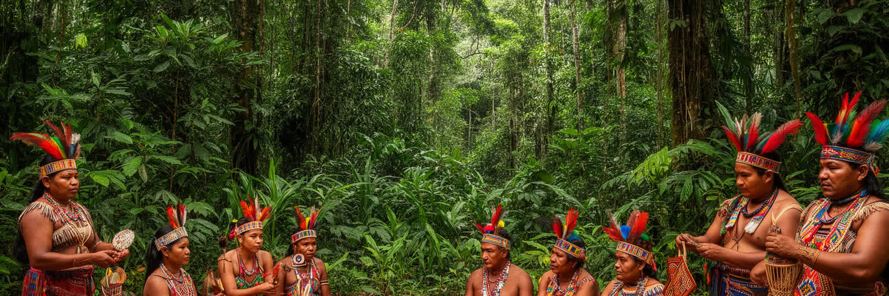
ベレンの文化は、都市と熱帯雨林を切り離さないところにあります。薬草の知識、果物の名前、魚の旬、キャッサバの加工、民間信仰、音楽、踊り、工芸は、森や川の暮らしを都市へ運びます。先住民文化は観光用の模様として消費されるだけではなく、食、言語、身体感覚、土地の記憶を通じて生活に残っています。夜になると広場、バー、河岸の店でカリンボーやブレーガが流れ、若者は動画を撮り、家族連れは涼しい時間に外へ出ます。音楽は余興ではなく、恋愛、労働、宗教、近隣州との交流を映す日常のメディアです。同時に、都市は森の知識をレストラン、土産物、祭り、文化イベントとして外へ売り出します。この過程では、誰が利益を得るのか、誰の知識が名前なしで使われるのかが問われます。アマゾン文化を語るなら、熱帯の豊かさだけでなく、森林破壊、鉱山開発、先住民の権利、都市部の貧困も同時に見る必要があります。文化は固定された伝統ではなく、都市へ来た人が新しい仕事や住まいの条件の中で作り直されます。森の知識を尊重するなら、その担い手の権利と生活の場所も守らなければなりません。博物館や文化施設が語るアマゾン像と、周辺地区の若者が作る音楽やファッションは同じではありません。その差を見ることで、都市文化が誰に代表され、誰の声が周辺に置かれるのかが見えてきます。
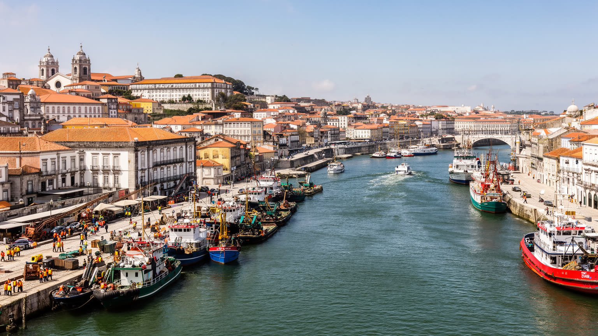
ベレンの経済は、州都の行政機能と港湾、商業、食品、教育、医療に支えられています。朝の市場には漁師、荷役、露店主、調理人、運転手、清掃員が集まり、港では船員、倉庫労働、通関、整備、保安が都市の物流を回します。観光客が見る河岸の賑わいの背後には、早朝の搬入、氷、燃料、箱、手押し車、濡れた床があります。サービス業や公務は安定した雇用を生みますが、非公式労働や低賃金の仕事も多く、家計は物価と交通費に左右されます。アサイーや魚の価格が変われば、食卓と商売の両方に響きます。ベレンの産業を数字だけで見ると、港と市場を支える身体的な労働が見えにくくなります。都市の力は、資源が通過することではなく、その流れを日々扱う人の技能と生活条件にあります。大学や医療機関は専門職を育て、行政は州内各地から人を集めますが、安定した職を得られない若者も少なくありません。経済の入口が港や市場に開いているほど、天候、燃料費、資源価格、治安が働く人の収入を直撃します。労働の条件を見ずに、ベレンの港湾都市性は理解できません。さらに港の仕事は市外や島々の暮らしとも結びつきます。船が遅れれば市場の品ぞろえが変わり、雨で荷役が止まれば日払いの収入も揺れます。物流は都市の血流であり、労働者の生活そのものと言えます。安定した港は、安定した家計につながります。
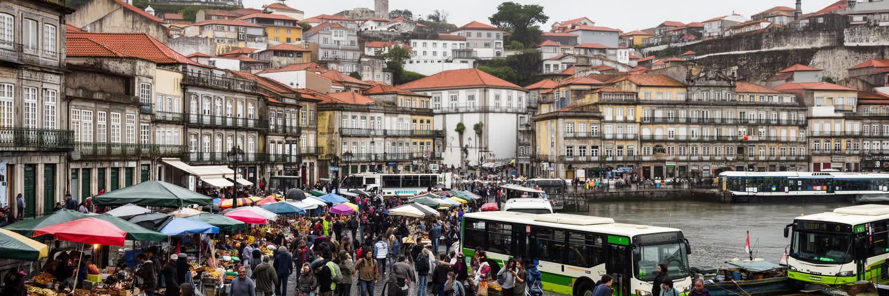
ベレンの日常は、強い日差し、午後の雨、開いた窓、家族の往来、近所の店、バスやバイク、川辺の移動で成り立ちます。中心部の古い住宅、集合住宅、周辺の低地集落、島の暮らしでは、住まいの条件が大きく違います。所得が低い世帯ほど、浸水しやすい場所、遠い通勤、暑さに弱い建物、公共サービスの不足に直面しやすくなります。学校、診療所、市場、教会、親族の家が近いことは、生活の安全網です。一方で、治安不安、交通の不便、失業、子どもと若者の機会不足は重い焦点です。観光地としての旧市街や河岸だけでは、ベレンの暮らしは分かりません。冷房のない部屋で過ごす夜、雨を待つ露店、冠水した道を渡る通学、親族が助け合う食事の時間まで含めて、都市の実像が見えてきます。公共交通が不安定なら、仕事や学校へ届く時間はさらに長くなります。住まいの問題は家の広さだけでなく、排水、日陰、医療、買い物、近所の支えへつながるかどうかです。ベレンの生活を評価するには、中心部の魅力と周辺地区の負担を同じ地図に置く必要があります。治安や所得の問題は、夜の移動、若者の進学、女性の働き方にも影響します。家族や近所の助け合いは強い資源ですが、それだけに頼れば公的サービスの不足が見えにくくなります。日常の豊かさは、困った時に頼れる制度が近くにあるかで変わります。
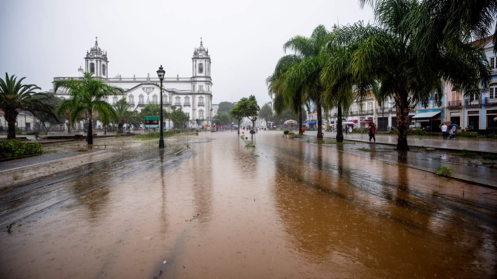
ベレンの気候は高温多湿で、雨は都市のリズムを決めます。短時間の強い雨、河川の増水、潮位、排水の不足が重なると、道路や低地住宅地はすぐに影響を受けます。熱帯の雨は恵みである一方、交通遅延、浸水、感染症、建物劣化、商売の中断を引き起こします。気候変動によって極端な雨や暑さが強まれば、最も影響を受けるのは排水や住宅が弱い地区です。水辺の都市であることは、景観の魅力であると同時に、日常的な管理責任を意味します。排水路の清掃、ゴミ収集、堤防、避難情報、涼める公共空間、保健医療は、防災と生活の質を同時に左右します。ベレンの気候対策は、大規模な工事だけでなく、弱い住まいを減らし、雨の日にも通える学校や働ける市場を守ることから始まります。冠水した道路は単なる不便ではなく、救急、通学、仕入れ、障害者の移動を止めます。暑さは屋外労働者や高齢者に重く、電気代の負担も家計を圧迫します。気候リスクを読むことは、都市の弱い場所と弱い人を見つけることでもあります。国際的な気候政策がベレンで語られるなら、市内の排水や住宅改良も同じ議題でなければなりません。森を守る都市は、雨に弱い住民を守る都市でもあるべきです。気候対策は、遠い未来の環境論ではなく、明日の通学路と市場の床を乾かす仕事です。雨の都市計画こそ生活の基盤です。
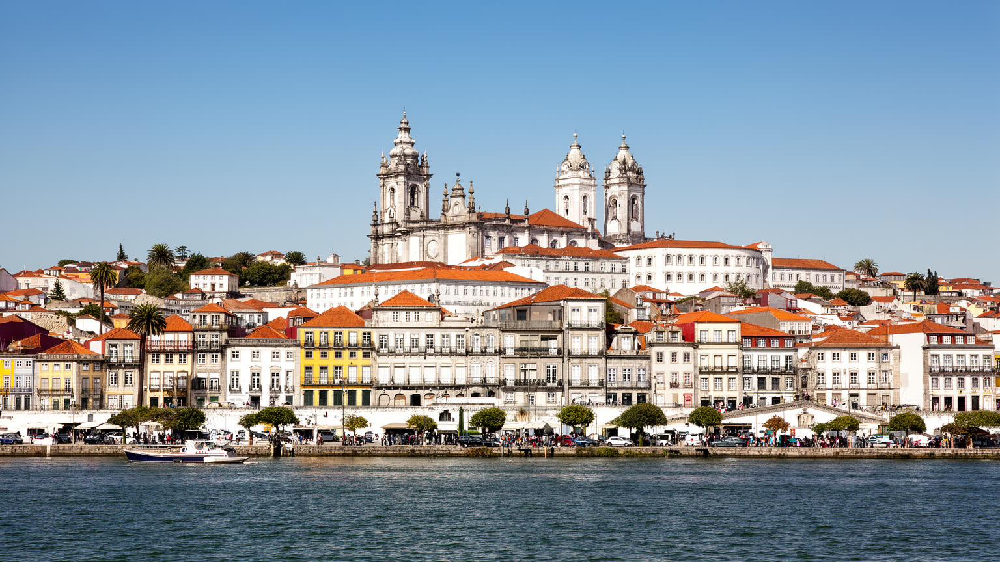
ベレン観光は、旧市街、ヴェル・オ・ペーゾ市場、教会、河岸、劇場、公園、周辺の島々を結びます。訪問者はアマゾンの入口として、食、船、植民地建築、宗教行事を短い距離で体験できます。しかし、観光の魅力は生活の場所と重なっています。市場は撮影の舞台である前に仕入れの場であり、教会は名所である前に祈りの場であり、島への船は休日の遊覧だけでなく住民の移動手段です。観光客が増えれば、飲食店や宿泊は潤いますが、価格上昇、混雑、治安対策、文化の演出化も起きます。遺産を守るとは、建物を塗り直すことだけではありません。市場で働く人、旧市街に住む人、巡礼を続ける人が都市の中心から追い出されないことも含まれます。ベレンの観光は、暮らしを尊重できるかで深さが変わります。ガイドブックの名所をつなぐだけでは、雨の日の市場、夕方のバス停、家族で食べるチリオの料理は見えてきません。旅の魅力と住民の負担が同じ場所にあるため、公共空間の整備、治安、清掃、交通は観光政策であると同時に生活政策です。遺産は使われ続けて初めて都市の記憶になります。観光がアマゾンの入口を売り物にするなら、島や低地に住む人の移動、自然環境、文化の権利も守る必要があります。訪れる人の視線だけで都市を整えると、生活の厚みは失われます。旅は、都市への敬意から始まります。
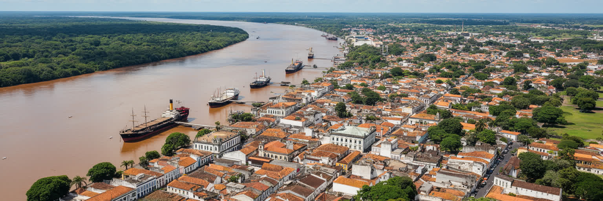
ベレンを読む鍵は、アマゾンの豊かさと都市の脆さが同じ場所にあることです。市場には森と川の多様な食材が集まり、チリオは巨大な信仰共同体を作り、河岸は美しい都市景観を見せます。一方で、所得格差、住宅不足、浸水、交通、治安、非公式労働、公共サービスの不足は日常を重くします。気候外交や森林保全の議論でベレンが注目されるほど、都市自身が環境正義を問われます。森を守る言葉が、低地に住む人の排水や住まいを改善しなければ、国際的な注目は生活から離れてしまいます。ベレンは小さな地方都市ではなく、アマゾンを世界へ説明する入口です。だからこそ、港、食、信仰、文化、観光、住宅、気候リスクを切り離さずに見る必要があります。河口の都市は、自然を背景に持つのではなく、自然と社会の緊張を毎日引き受けています。ベレンの強さは、森を都市の外に置かず、食卓、信仰、労働、港、政治へ取り込んできたことです。その強さを未来へつなぐには、文化を売るだけでなく、排水、住宅、教育、医療、若者の仕事を整える必要があります。世界がアマゾンを見るとき、ベレンの住民の暮らしも同時に見られるべきです。都市を一枚の絵として眺めると、河岸の美しさだけが残ります。しかし、ベレンを深く読むなら、船を待つ時間、雨で止まる仕事、祭りの祈り、市場の値段、低地の不安を同時に置く必要があります。それが河口都市の現実です。